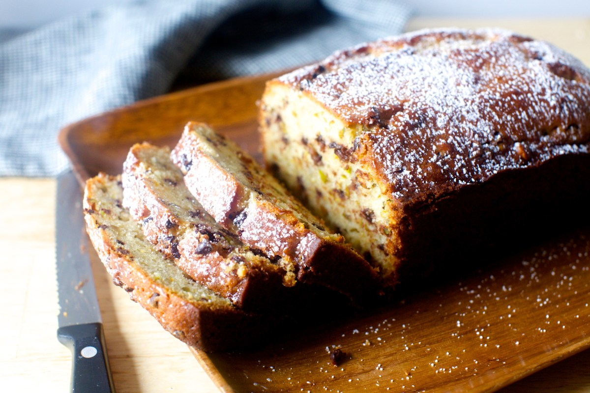

Cannoli Pound Cake
- Butter or cooking spray to coat pan
- 1 cup (200 grams) granulated sugar
- Finely grated zest from 1 orange
- Finely grated zest from 1 lemon
- 1/2 cup (120 ml) olive oil
- 1 cup (250 grams) whole-milk ricotta cheese
- 2 large eggs
- 2 teaspoons baking powder
- 1/4 teaspoon fine sea or table salt
- 1/2 teaspoon ground cinnamon
- 1 or 2 pinches allspice
- 1 1/2 cups (190 grams) all-purpose flour
- 1 cup (170 grams) mini-chocolate chips or 6 ounces semisweet chocolate bar, chopped into tiny bits
- 1/2 cup (60 grams) pistachios, chopped small
Heat oven to 350°F (175°C)
. Coat a standard (8 1/2-x-4 1/4″) loaf pan with butter or a nonstick spray.
Place sugar in a large bowl, and add zest. Use your fingertips to rub the zest into the sugar, scenting it througout. Whisk in olive oil, ricotta and eggs. Sprinkle baking powder, salt, cinnamon and allspice over wet ingredients, then whisk to combine. Gently stir in flour, then chocolate and pistachios until just combined.
Scrape into prepared loaf. Bake oven for 55 to 65
minutes, until a skewer inserted into the center of the cake comes out-batter free. Let cool on wire rack in pan for 15 minutes, then invert out onto rack to
finish cooling. Cake is great the first day, and even more amazingly moist on the second and third, so feel free to plan ahead. Store at room temperature, covered with foil or plastic and engoy!.